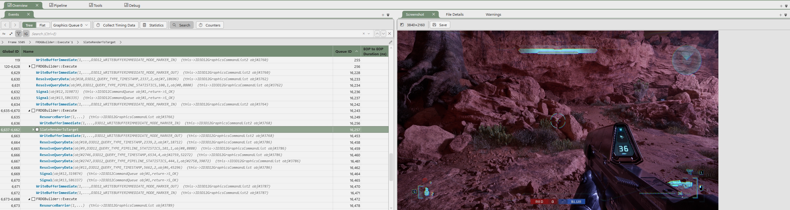

The problem
Inherited performance conclusions were driving live architectural decisions.
Screen-wide HUD effects, the family of full-screen post-process and Retainer Box treatments that read as "the visor" to the player, are one of the most visible surfaces in the game and one of the most expensive to render. Two conflicting narratives were driving decisions: an older internal position that a single Retainer Box wrapping the HUD would be unacceptably expensive at target resolution, and a newer team hypothesis that certain material-based screen effects were "essentially free" because their instruction counts looked low in isolation.
Both narratives were being cited as fact. Neither had been re-measured under current-project conditions.

SlateRenderToTarget highlighted), with the in-engine 4K reference frame on the right.Constraints
Platform scope
PC only. No matched Xbox capture in the window, so every conclusion had to be bounded to PC and re-validated later.
Resolution
4K. Screen-space cost scales with pixel count, so lower-res measurement would understate the actual worst case.
Scene
A specific idle multiplayer context chosen so HUD cost dominated the frame budget rather than being masked by gameplay variance.
Comparability
All six configurations shared build, map, camera, and post-process stack. Any uncontrolled variable would undermine the whole study.
The key idea
Don't argue about inherited numbers. Re-measure them under current conditions, then quote every result with its caveats attached.
I built a six-way PIX matrix isolating the variables that mattered, Retainer Box presence, material-only optimization, worst-case glitch effect, hybrids, then ran three captures per configuration and reported every number with its scope attached ("~27% reduction (PC · 4K · idle MP · single capture set)"). No detachable claims.
Production highlights
Six-way controlled matrix
Baseline, material-only optimized, single Retainer Box wrap, worst-case glitch effect, and two hybrids, so interactions were exposed rather than reported additively.
The surprise that reframed the conversation
Under PC · 4K · idle MP, a single Retainer Box wrap was consistently cheaper than the documented baseline, not more expensive. That flipped the architectural conversation.
Publish the loss
The glitch effect's +51% cost was quoted openly, up front. Reporting only the wins would have signalled cherry-picking; the loss is what let design push back on evidence rather than vibes.
Three captures per configuration
Repeatability check for each config bounded noise and ruled out timing artifacts. Every quoted number was reproducible before it entered the report.
What I'd carry forward
- Re-test inherited assumptions under current conditions. Two-year-old numbers almost always mask changes in engine version, render pipeline, resolution target, and content weight.
- Preserve the caveats with the number. Detaching a result from its scope is how misinformation spreads onto the next project.
- Publish the loss. The +51% glitch cost made the study credible. Only reporting wins signals cherry-picking.
- Xbox validation is the outstanding gap. Screen-space cost curves differ enough between GPUs that PC results shouldn't be extrapolated blindly.